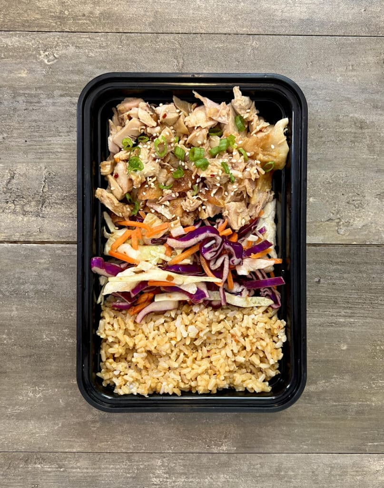

Teriyaki Rotisserie Chicken Bowls
Back to main page

These Teriyaki Rotisserie Chicken Bowls can be prepped with no cooking other than using a microwave by utilizing a rotisserie chicken bought from the store.
This meal can be tossed together in 20 minutes and provide you with your lunches for the week.
Ingredients for the main meal:
- 1.5 lbs (681 g) pulled rotisserie chicken
- 9 tbsp (135 g) teriyaki sauce
- 2 tsp (10 g) sesame seeds
- 2 (10 g) green onions
Ingredients for the rice:
- 4 cups (568 g) cooked rice
- 1 tbsp (15 g) soy sauce
- 1 tbsp (15 g) rice vinegar
- 1 tbsp (15 g) crunchy chili garlic oil
Ingredients for the slaw:
- 12 oz (340 g) shredded cabbage
- 1 cup (100 g) matchstick carrots
- 2 tbsp (30 g) rice vinegar
- 1 tbsp (15 g) crunchy chili garlic oil
- 1 tbsp (21 g) honey
Steps
- Cook the frozen rice in the microwave according to the packaging.
- In a large bowl, add the carrots, cabbage, vinegar, chili garlic oil, and honey.
- Mix to combine, season with salt to taste and adjust flavor as needed.
- Butcher your rotisserie chicken and pull away the meat. Measure out 1.5lbs or 681g of the chicken into a bowl.
- Add 4 tbsp or 60g of teriyaki sauce and mix.
- Add the rice to the bowl and mix in the soy sauce, vinegar, and chili oil.
- Divide the ingredients evenly between 5 containers. Top with sesame seeds and green onions if you wish.
- After reheating, top each dish with 1 tbsp of teriyaki sauce.
Back to main page